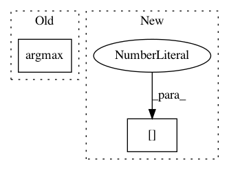

399a74dfa594ec891c1da5553394b8155f64453d,examples/FasterRCNN/modeling/model_cascade.py,CascadeRCNNHead,match_box_with_gt,#CascadeRCNNHead#Any#Any#,79
Before Change
with tf.name_scope("match_box_with_gt_{}".format(iou_threshold)):
iou = pairwise_iou(boxes, self.gt_boxes) // NxM
max_iou_per_box = tf.reduce_max(iou, axis=1) // N
best_iou_ind = tf.argmax(iou, axis=1) // N
labels_per_box = tf.gather(self.gt_labels, best_iou_ind)
fg_mask = max_iou_per_box >= iou_threshold
fg_inds_wrt_gt = tf.boolean_mask(best_iou_ind, fg_mask)
After Change
with tf.name_scope("match_box_with_gt_{}".format(iou_threshold)):
iou = pairwise_iou(boxes, self.gt_boxes) // NxM
max_iou_per_box = tf.reduce_max(iou, axis=1) // N
best_iou_ind = tf.cond(tf.shape(iou)[1] > 0,
lambda: tf.argmax(iou, axis=1), // //proposal, each in 0~m-1
lambda: tf.zeros([tf.shape(iou)[0]], dtype=tf.int64))
labels_per_box = tf.gather(self.gt_labels, best_iou_ind)
In pattern: SUPERPATTERN
Frequency: 4
Non-data size: 2
Instances
Project Name: tensorpack/tensorpack
Commit Name: 399a74dfa594ec891c1da5553394b8155f64453d
Time: 2020-04-11
Author: ppwwyyxxc@gmail.com
File Name: examples/FasterRCNN/modeling/model_cascade.py
Class Name: CascadeRCNNHead
Method Name: match_box_with_gt
Project Name: Hironsan/anago
Commit Name: 0ad8a1c0c5fab76020058a99406aa63a3e1d61a0
Time: 2018-06-01
Author: hiroki.nakayama.py@gmail.com
File Name: anago/tagger.py
Class Name: Tagger
Method Name: _get_tags
Project Name: chainer/chainercv
Commit Name: a7706fbde22887909db42f96a696437c084c05db
Time: 2017-05-31
Author: Hakuyume@users.noreply.github.com
File Name: chainercv/evaluations/eval_detection_voc.py
Class Name:
Method Name: eval_detection_voc
Project Name: chainer/chainercv
Commit Name: e686762e970ee4c0748242e735c2b068b9af89cf
Time: 2017-03-10
Author: yuyuniitani@gmail.com
File Name: chainercv/extensions/semantic_segmentation/semantic_segmentation_vis_report.py
Class Name: SemanticSegmentationVisReport
Method Name: __call__